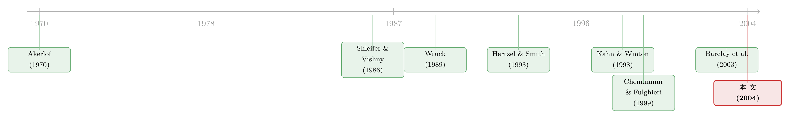

谁来挑这位「监督者」？——私募折价背后的一桩自我交易
本文读的是 YiLin Wu (2004, Journal of Financial Economics)：一家刚上市不久的高科技公司，把股票折价卖给一个「大投资者」，人们习惯把这解释成「请人来监督管理层」。但作者用 360 笔私募和 728 笔公开发行的样本说明——私募确实对应着更高的信息不对称，可它带来的并不是更多监督；恰恰相反，当买家就是公司高管自己时，折价反而更大。所谓「监督」，很多时候只是「自我交易」披的一件外衣。
1 一个反直觉的问题：为什么折价 19% 卖给「自己人」？
先讲一个画面。
一家高科技公司刚做完首次公开募股（initial public offering, IPO）不久，规模还不大，但烧钱的速度一点没慢下来，于是它需要再融一笔股权。摆在它面前的有两条路：一条是公开发行（public offering），把股票卖给市场上一大群素不相识的小投资者；另一条是私募发行（private placement），找一两个「成熟」的大买家，私下谈好价格，把一大块股票一次性卖给他。
按理说，私募应该卖得更贵才对——买家是机构、是行家、是愿意长期持有的人。可数据偏偏相反。在 Wu 的样本里，私募的发行折价（issue discounts）中位数高达 19.4%，而公开发行只有 3.3%；哪怕只看那些注册过、可以随时转售的私募，中位数折价也有 15.3%。换句话说，公司宁可打个对折的折扣，也要把股票塞给那一两个特定的人。
这就引出了一个很自然的疑问：公司为什么愿意吃这么大的亏，把股票折价卖给少数几个买家？
学界给过一个听上去非常体面的答案：监督（monitoring）。私募天然把股票集中到少数人手里，形成集中的所有权，再配上转售限制（trading restrictions），于是这位大买家就有了又有动机、又跑不掉的「监督管理层」的身份。折价，是公司付给这位监督者的「辛苦费」。
这个故事漂亮得几乎无懈可击。但它有一个被长期忽略的裂缝——这位「监督者」是谁挑的？
2 两套理论：信息不对称，还是监督？
要把这个问题讲清楚，得先把私募这件事拆成两套互相竞争的理论。
第一套是信息不对称（information asymmetry）。 它的逻辑来自 Akerlof (1970) 的柠檬市场（market for lemons）：当外部人看不清一家公司的真实质量时，市场会用一个「平均价」来报价，好公司因此吃亏。Chemmanur and Fulghieri (1999) 把这套逻辑用到了发行方式的选择上——公开发行要说服一大群投资者掏钱，每个人都得去做尽调、生产信息，于是在给定的信息不对称水平下，公开发行的信息生产成本更高。一家信息越不透明的公司，越有动机走私募，因为私募只面对寥寥几个买家，信息生产的总成本更低。一句话：信息越「看不清」的公司，越倾向于私募。
第二套是监督。 Shleifer and Vishny (1986) 证明集中的所有权能改善监督激励——一个持有大块股票的人，才有动力去盯着管理层。Wruck (1989) 进一步指出，私募天然制造了这种集中。Kahn and Winton (1998) 则补上了另一块拼图：转售限制本身也能提供监督激励，因为它不许投资者在公司表现糟糕时一走了之，于是逼着他留下来「管」。按这套理论，私募折价就是对监督者的补偿；而且——这一点是后面识别的关键——初始持股越小的投资者，越需要靠大折价来补偿，因为小股东本来没什么动力去监督。
接着，一个自然的问题是：这两套理论看上去都能解释「私募 + 折价」，怎么把它们分开来检验？
信息不对称那一套相对好查：只要去看私募公司是不是真的更「看不清」就行。难的是监督。监督这件事，理论上人人都说得通，但它有一个致命的预设——它假设那个大买家是被公司「请来管事」的。 可现实里，私募的买家名单，恰恰是管理层自己开出来的。
公开发行卖给一大群分散的小投资者，管理层对最终的股权结构几乎没有发言权（Rock, 1986）。但私募不一样：买家少，管理层的偏好在「找谁来买」这件事上举足轻重。管理层完全可以挑那些会在投票时站在自己这边、会保住自己位子的人——甚至，挑自己。
于是真正关键的一步出现了：如果要证伪「监督」，就得去看这些被挑出来的买家，到底是不是真的在监督；以及，当买家就是管理层本人时，折价是变小了还是变大了。
3 识别策略：怎么把「监督」这个故事证伪
Wu 的做法不是去估一个「监督的因果效应」——那几乎无法直接测量。他的策略更聪明：把监督理论推到它必须成立的几个可证伪的推论上，然后逐一去对数据。
第一步，先把信息不对称量出来。 作者用了两组代理变量。IPO 时点的：公司 IPO 时的年龄 Age₁、IPO 抑价（underpricing）、以及是否有风险资本（venture capital）背书的哑变量 Venture。IPO 之后的：分析师人数 Analyst、机构投资者数 INST、机构投资者占股东数的比例 INST/Share、上市到发行公告的间隔 Age₂、换手率 VOL、以及买卖价差 Spread。逻辑很直接——年轻、抑价高、没有 VC 背书、分析师少、机构少、价差宽、成交稀薄，都指向更高的信息不对称，因而预期与私募的概率正相关。
第二步，把「监督」拆成两个可检验的推论。
其一，谁在监督？ 作者沿用 Admati and Pfleiderer (1994)、Sahlman (1990)、Karpoff (1999) 的共识，把养老金基金和风险资本基金认定为机构大股东里最强的监督者——养老金会通过股东提案、私下谈判介入治理，VC 则与管理层贴身工作。于是监督理论有一个清楚的预言：如果私募真为监督而来，那么私募之后，这两类「强监督者」的持股应该上升。
其二，转售限制是否换来了监督？ 按 Kahn and Winton (1998)，转售限制对持股小的投资者尤其重要，因为正是「跑不掉」逼着小股东去监督。所以监督理论预言：小初始持股的投资者，折价应该更大；大初始持股的投资者，折价应该更小。
第三步，也是全文的杀招——给监督理论摆一个对立假设：管理层自我交易（managerial self-dealing）。 这套逻辑来自 Barclay, Holderness and Sheehan (2003) 的「block pricing puzzle」：私募投资者其实大多是被动的，折价不是监督的报酬，而是对管理层「巩固自身地位（entrenchment）」的隐性补偿。Wu 把它锐化成一个可检验的横截面预测：折价会稀释老股东的权益，把财富从老股东转移给新股东；当新股东就是管理层自己、而且管理层初始持股很小时，他从这种转移里捞到的好处最大。 于是自我交易理论预言——卖给管理层的私募，折价应该更高；而且管理层初始持股越小，折价越高。
注意这两套理论在「折价」上的预测刚好打架：监督说「小投资者折价大是因为要补偿监督」，自我交易说「管理层折价大是因为他在掏空老股东」。把买家的身份分开来看，就能让数据自己说话。
4 数据
样本的构造很见功力。作者刻意只取高科技行业的 IPO 后公司，理由有二：一是股权是这类公司最主要的融资来源，少了债务等替代渠道，样本选择偏误更小；二是高科技行业的信息不对称尤其突出（Himmelberg and Petersen, 1994），这恰好放大了检验信息不对称的功效。
- IPO 数据来自 Investment Dealer's Digest（1986–1996），高科技行业用 CorpTech 名录识别，剔除信息不对称偏低的反向杠杆收购 IPO 和分拆 IPO 后，得到
1,596家高科技 IPO（NYSE 123 家、Amex 80 家、Nasdaq 1,393 家）。 - 1986–1997 的私募与公开发行，用 Lexis-Nexis 公司新闻库的一串关键词（private placement、Regulation D placement、direct placement 等）检索，再用 Dow Jones、SEC 文件（8-K、10-Q、10-K）、Security Data 等补全。
- 最终样本：
360笔私募（占 14%）、728笔公开发行（占 32%）。投资者身份则进一步从 Summary of Insider Transactions 和 Compact Disclosure 里手工挖出来。
观测单位是「一笔发行」。私募和公开发行的体量差距巨大：私募的总募资中位数只有 $4.2M，公开发行是 $28.2M；私募公司的资产账面值中位数 $13.7M，公开发行是 $36.9M。这些差异意味着，后面所有回归都必须控制发行规模和公司规模——否则你分不清「是私募本身的特征」还是「只是小公司的特征」。
5 三个发现，两个反转
发现一：私募公司确实更「看不清」。 这一条支持信息不对称理论，也是唯一一条与传统直觉一致的。私募公司更可能在生命周期更早的阶段就上市、更不可能有 VC 背书、机构投资者更少、买卖价差更宽、成交量更小、分析师覆盖更少。信息不对称这条腿，站得住。
接着是第一个反转——发现二：私募并没有带来更多监督。 作者把投资者身份一层层剥开：私募买家里 63% 是「知情投资者」，但一旦剔除那些可能只持有小比例、又拿不到非公开信息的机构投资者，这个比例就跌到 34%。更要命的是那两类「最强监督者」：与公开发行相比，养老金和 VC 基金在私募中的持股不显著地下降，反倒是其他类型的大股东显著地增持。也就是说，私募并没有把股票送进监督者手里，而是送进了一群说不清会不会监督的人手里。
转售限制这条线索同样失灵。如果监督理论成立，小初始持股的投资者折价应该更大；但数据显示，小投资者和大投资者之间的折价差异不显著——转售限制并没有换来「对小股东的额外补偿」。还有一个细节很说明问题：整个样本里，只有 7% 的私募给了投资者董事会席位。一个连董事会都不进的人，要怎么「监督」？
然后是第二个、也是最致命的反转——发现三：当买家是管理层自己，折价反而更大。 这正是自我交易理论的核心预测。Wu 发现，卖给管理层的私募，折价高于管理层不参与的私募；而且管理层初始持股越小，折价越高——与「初始持股小、越有动机从老股东兜里掏钱」完全吻合。
这个结果其实早有先声。Hertzel and Smith (1993) 就发现，卖给管理层的私募折价高达 44%，而卖给其他投资者只有 19%。监督理论很难解释这件事：你很难说一个公司的 CEO 会去「监督」他自己。但自我交易理论解释得干净利落——折价稀释了老股东的权益，把财富转给新股东，当新股东就是 CEO、且他原本持股很小时，他从这场转移里赚得最多。于是「折价」不再是监督的报酬，而是巩固管理层地位、向老股东收取的一笔隐性贡金。这与 Barclay et al. (2003) 的判断殊途同归：私募投资者大多被动，折价反映的是对「entrench 管理层」的隐性补偿。
把三条放在一起，这篇论文的核心结论就立住了：私募对应着高信息不对称，这一点没错；但「私募是为了引入监督」这个广为流传的看法，至少在这批高科技 IPO 后公司里，站不住脚——它更像是管理层借私募之名行自我交易之实。
（关于「大股东到底能从公司里拿走多少」，可参见《拍卖桌上量出来的「掏空」》；关于控制权私利的结构化度量，可参见《控制权的私利，到底值多少钱？》。）
6 文献脉络
这篇论文坐在两条河流的交汇处。
一条河是信息不对称与发行机制：从 Akerlof (1970) 的柠檬市场出发，经 Chemmanur (1993) 把信息生产写进 IPO 定价，到 Chemmanur and Fulghieri (1999) 用「上市决策理论」预言「知名公司选公开发行、信息不对称高的公司选私募」。Wu 这篇的「发现一」正是对这条河的实证落地。
另一条河是集中所有权与监督：Shleifer and Vishny (1986) 奠基，Wruck (1989) 指出私募制造集中所有权、并记录了正向的公告效应，Kahn and Winton (1998) 把转售限制也纳入监督激励的来源。这条河流到 1990 年代，几乎成了私募研究的「默认叙事」。

但裂缝也是从这条河里渗出来的。Hertzel and Smith (1993) 发现机构持股在私募后反而下降、且卖给管理层的折价畸高——这两个事实都和「监督」格格不入。到了 Barclay, Holderness and Sheehan (2003)，「block pricing puzzle」干脆把私募折价重新解释成对管理层巩固地位的补偿。Wu (2004) 的贡献，就是第一次系统地把「公开发行 vs 私募」的选择、投资者身份的逐层拆解、以及管理层折价的横截面，放进同一个高科技样本里，用三组事实把「监督叙事」逼到墙角，给自我交易理论补上了一块实证基石。
评论与延伸（Q&A + 研究方向）
(a) 几个可能的疑问
Q：私募折价高，会不会只是因为转售限制本身（流动性补偿），而不是什么自我交易？
这是最该担心的混淆。作者的处理是：转售限制对所有投资者是一样的，但折价却随买家身份系统性变化——卖给管理层显著更高、且随其初始持股下降而上升。纯流动性补偿无法解释这种「看人下菜碟」。不过，作者并没有把「流动性折价」干净地估出来再扣掉，这是识别上的一个软肋。
Q：「监督者」用养老金和 VC 来代理，会不会本身就有问题？
有可能。把养老金和 VC 当成「最强监督者」是文献共识（Karpoff, 1999；Admati and Pfleiderer, 1994），但监督是连续而隐蔽的行为，用「这两类机构的持股是否上升」来代理，本质上是个粗糙的二元划分。若真正的监督者是某个非典型的战略买家，作者的检验就会低估监督的存在。
Q：发现一（私募公司信息不对称更高）和发现二三（不是监督）会不会自相矛盾？
不矛盾，反而是全文的精巧处。信息不对称解释的是「为什么选私募这种机制」；监督/自我交易解释的是「折价给了谁、为什么」。一家公司可以既因为信息不对称而走私募，又在私募里被管理层用来自利——两件事发生在不同的环节。
Q：样本只有高科技 IPO 后公司，结论能外推吗？
要小心。作者选高科技正是为了放大信息不对称的功效，这让「发现一」更有说服力，但也意味着这是一个监督需求可能本就偏弱、管理层控制权可能偏强的特殊群体。在成熟行业、或由真正的私募股权基金主导的交易里，监督的角色可能完全不同。
Q：管理层折价高，会不会是「皮肤在游戏里」的信号，而非掏空？
这是自我交易理论最强的对手解释。但信号理论预测的是管理层增持并接受更差的条款（少折价、多锁定）来证明信心；而数据是管理层拿到更大折价、且初始持股越小折价越大。这与「证明信心」恰恰相反，更像是趁老股东不备转移财富。
Q：只有 7% 给董事会席位，是不是太苛刻地理解「监督」了？
董事会席位是监督的充分非必要条件——没有席位也可能通过私下谈判施压。但它至少说明，私募并没有制度化地为大买家配置治理权力。配合「强监督者持股不升」一起看，监督叙事缺的不是某一个证据，而是一整类证据。
(b) 几个可能的研究问题与提案
1. 把这套检验搬到公司债的私募（Rule 144A）上。 【经济故事】债权人的「监督」逻辑和股东不同——债权人更关心下行风险与契约（covenant）。如果私募债的折价（即更高的发行收益率）随买家身份变化，能否同样区分「监督溢价」与「自我交易/关联交易」？ 【可行性】中。Mergent FISD 有 144A 债券的发行与条款数据，TRACE 提供二级价格；难点是私募债的初始买家身份披露很差，需要从 13F、保险公司 NAIC 持仓里手工拼。识别上可借鉴本文的「买家身份 × 折价」横截面。
2. 外资作为私募买家：监督者，还是被挑来的「沉默股东」？
【经济故事】本文样本里 15% 的私募卖给了外国投资者。外资常被贴上「监督弱、信息劣势」的标签（这一点上可参见《外资真是「蝗虫」吗？》）。管理层是否系统性地偏好把私募卖给监督能力更弱的外资，以换取更安稳的控制权？
【可行性】中。需要把私募买家国籍与后续治理介入（代理投票、董事提名）对接，FactSet/ISS 投票数据可用；识别靠「管理层持股 × 外资买家」的交互。
3. 自我交易折价与未来业绩：掏空有没有「后果」？ 【经济故事】如果卖给管理层的大折价真是掏空，那么这类私募之后的长期股价表现、运营业绩应当系统性更差；若是信号，则应更好。这是把横截面证据推向因果含义的关键一跃。 【可行性】高。CRSP/Compustat 即可做事件后的 BHAR 与运营指标，本文样本可直接复用。难点是长期收益的统计推断（参见《为什么「上市后跌跌不休」可能是一道算术题》 里对内生事件长期收益的警告）。
4. 监管变化作为外生冲击：当「卖给自己」变难。 【经济故事】SEC 对关联方私募的披露与定价规则若收紧，相当于抬高了自我交易的成本。在规则变化前后，卖给管理层的私募折价是否收敛？这能把横截面相关性推向准实验的因果。 【可行性】中。需要找到一个干净的规则断点（如 Reg D 修订、144 规则调整），用前后差分或断点；挑战在于规则变化往往是渐进且被预期到的。
参考文献
Akerlof, G.A. (1970). The market for "lemons": Quality uncertainty and the market mechanism. The Quarterly Journal of Economics 84(3), 488–500.
Admati, A.R., Pfleiderer, P. (1994). Robust financial contracting and the role of venture capitalists. Journal of Finance 49(2), 371–402.
Barclay, M.J., Holderness, C.G., Sheehan, D.P. (2003). The block pricing puzzle. Unpublished working paper, Boston College.
Chemmanur, T.J. (1993). The pricing of initial public offerings: A dynamic model with information production. Journal of Finance 48(1), 285–304.
Chemmanur, T.J., Fulghieri, P. (1999). A theory of the going-public decision. Review of Financial Studies 12(2), 249–279.
Hertzel, M.G., Smith, R.L. (1993). Market discounts and shareholder gains for placing equity privately. Journal of Finance 48(2), 459–485.
Himmelberg, C.P., Petersen, B.C. (1994). R&D and internal finance: A panel study of small firms in high-tech industries. Review of Economics and Statistics 76(1), 38–51.
Kahn, C., Winton, A. (1998). Ownership structure, speculation, and shareholder intervention. Journal of Finance 53(1), 99–129.
Megginson, W.L., Weiss, K.A. (1991). Venture capitalist certification in initial public offerings. Journal of Finance 46(3), 879–903.
Rock, K. (1986). Why new issues are underpriced. Journal of Financial Economics 15(1–2), 187–212.
Shleifer, A., Vishny, R.W. (1986). Large shareholders and corporate control. Journal of Political Economy 94(3), 461–488.
Wruck, K.H. (1989). Equity ownership concentration and firm value: Evidence from private equity financings. Journal of Financial Economics 23(1), 3–28.
Wu, Y. (2004). The choice of equity-selling mechanisms. Journal of Financial Economics 74(1), 93–119.